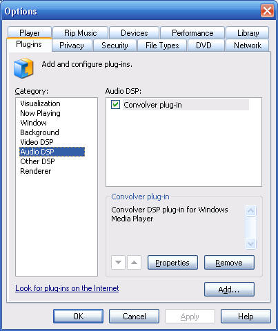
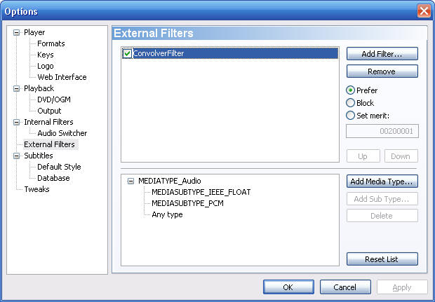
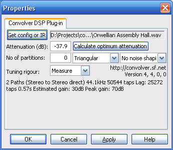
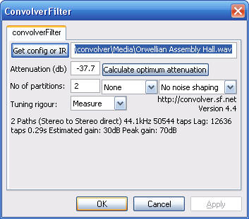

|
| |
Installation
To install Convolver:
1. download convolver and unzip it.
There are two versions: a complete source version (convolver-source), and a version
that contains only the installation package (convolver).
- The source version can be run from Visual Studio 2005, or
- Run Setup.exe to install the installation package version.
Getting started
The following describes getting started with WMP,
Media Player
Classic and Adobe Audition. There is also a full walkthrough
for ZoomPlayer Pro which is more complex to set up. Other DirectShow hosts,
such as Media Player Classic, may offer a choice of using Convolver DSP plug-in
(ConvolverWMP, a DMO), ConvolverFilter or ConvolverWrapper. These have identical
functionality.
Windows Media Player
2. In Windows Media Player select Tools | Plug-ins |
Options.
On the Plug-ins tab, select Audio DSP you should see this:

|
2. In
Media
Player Classic hit O | External Filters | Add Filter ... | ConvolverFilter
| OK and then set the merit to Prefer:
 |
Adobe Audition
2. Select Effects | Refresh Effects List and confirm that
you want to refresh the effects list.
|
| 3. Select Properties to
configure the plug-in: 
The number of taps will be double the length of the relevant filter file.
|
3. Double click on ConvolverFilter

|
3. The properties page
may come up when you scan for DirectX filters, or select Effects | DirectX
| ConvolverFilter (or ConvolverWrapper) to configure the plug-in |
4. Select Get config or IR and pick up either
- an impulse response (IR) sound file
- which will be a WAV (or other supported
sound file format) file. The file will be convolved channel by channel
with the source. The file must have the same number of input and output
channels and sample rate as the source that you are playing back and the number
of speakers that you are using. Raw PCM (.PCM) files are assumed to be single-channel
44.1kHz 32-bit float files. Similarly .DBL files are assumed to be single-channel
44.1kHz 64-bit float files. If you need to specify a different sample
rate with a raw file, use a config file.
- This is not the best approach theoretically for room correction, but is
simple and may give you good sound anyway; or
- a configuration (text) file
- This is more complex, but more flexible approach. There are also some
examples, although they will not be intelligible
without looking at the config file instructions first.
- The links page has some pointers to sources of
impulse responses that you can try, just to get going. See
duffroomcorrection if you want
to record your own room impulse responses.
5. The input channels are also scaled by 10 Attenuation /
20. So negative values will help to to prevent clipping and positive ones
will result in amplification. If you hear no playback, try raising this value.
- Push the Calculate optimum attenuation button to have the plug-in
calculate a (probably conservative) attenuation value. The optimum attenuation
will vary slightly from calculation to calculation. Subsequent calculations
will typically execute faster than the first calculation as Convolver tunes
itself to your system.
- The theoretical maximum gain for the filter that you have selected is shown
as the peak gain in the filter description (70dB in the above example).
You could set the attenuation to the negative of this value (eg, -70dB in the
above example) although that value is likely to be extremely conservative and
you will probably just hear silence. The Estimated gain is less conservative.
- Set Attenuation to 0 for no attenuation.
- Attenuation must be between ±1000.
6. The dither and noise shaping settings apply only to 8,
16, 20 and 24-bit PCM output and have no effect otherwise. Triangular uses triangular
"high pass" additive dither and is the theoretically optimal setting. The
perceived noise due to dither can be reduced by using noise shaping.
7. The No of partitions setting allows you to tune the convolution
algorithm to your cpu (and the size of its cache). Try values such as 0, 2,
4, 8 or 16. Observe how long it takes to Calculate optimum attenuation
to find the best number of partitions for your setup or, preferably, use the
perftest command line
utility.. A value of 0 will use straight overlap-save convolution. (A setting of
1 will effectively do the same, or more precisely overlap-add, but slightly less
efficiently.) Also, the larger the number of partitions, the shorter the lag
between input and output.
8. Convolver tunes itself for a particular filter and number of partitions
when the filter is loaded or the number of partitions changed. The Tuning
rigour setting allows you to specify how much effort the convolution routines
put into tuning themselves to your system:
- Estimate
- specifies that, instead of actual measurements of different algorithms,
a simple heuristic is used to pick a (probably sub-optimal) method quickly.
- Measure
- finds an optimized method by actually and measuring the execution time of
candidate methods, so there may be a pause while this happens. Depending on
your machine, this can take some time (often a few seconds). This is a good
default option.
- Patient
- is like Measure, but considers a wider range of algorithms and often
produces a “more optimal” method (especially for large convolutions), but at
the expense of much longer tuning time (minutes). This option also considers
multi-threaded execution, which may be a benefit for longer filters and multiple
processors (or even multi-core and perhaps even hyperthreading processors).
- Exhaustive
- is like Patient, but considers an even wider range of algorithms,
including many that are unlikely to be fast, to produce the most optimal calculation
method but with a substantially increased tuning time.
- Take 1 minute
- Finds the best method that it can within a minute for each filter path.
The tuning results are retained for reuse in a file called
wisdom.fftw.
9. After loading a new (or initial) filter, you may need to restart Windows
Media Player (or select a new track) to get WMP to recognise Convolver's new capabilities.
10. In the case of Media Player Classic, you should be able to see the
playback format of the input and output. After selecting a file for playback (Ctrl-O),
select Play | Filter | ConvolverFilter | Pin Info.
|